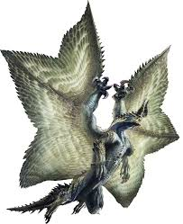

Gore Magala proviene de las palabras Gore (sangre en inglés)
y Magala (reencarnación en arameo).
Apariencia
El Gore Magala tiene el cuerpo típico de un dragón,
con cuatro patas y dos alas. Está cubierto de escamas de color negro. Sus alas son grandes,
armadas con zarpas de color rojo, que suelen mantenerse plegadas simulando una capa.
Las membranas de las alas están cubiertas de una especie de pelo. Su cabeza carece de ojos,
y cuando se enfurece unos cuernos ocultos en su cabeza se levantan, tomando un brillo morado.
FuegoAguaHieloDracoRayo gore magala caotico es la variante del Gore magala esta variente no llego a combertirse en shagaru magala
, categoria "desconocida"
El gore magala caotico es una variante del gore magala que no completo su ciclo evolutivo por culpa de
un shagaru magala, ya ue apesar de ser de la misma especia, son muy territoriales. su prinsipal caracteristica
es que solo tien un cuerno simpre afuera
 Shagaru magala es la variante del Gore magala, categoria "dragon anciano"
las diferencias entre gore magala y shagaru magala principal mente es el color a demas de que sus cuernos siempre estan ala vista